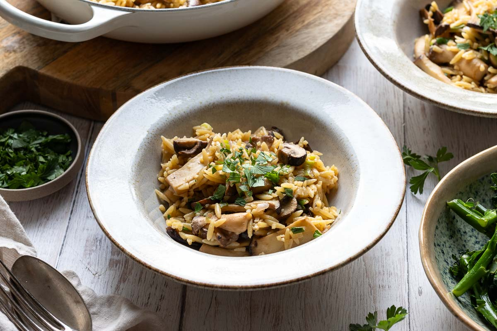

Miso Orzo Pasta
October 17, 2025
A delightful fusion dish combining the rich umami of Japanese miso with the comforting texture of Italian orzo pasta. This creamy, savory pasta is elevated with golden shiitake mushrooms and freshly grated parmesan cheese.
Watch Reel

Prep Time
15 mins
Cook Time
30 mins
Total Time
45 mins
Yield
4 servings
Ingredients
- 450g Orzo
- 85g Unsalted Butter
- 45g White miso paste
- 115g Parmesan, finely grated
- 80g shiitake mushrooms
- 400ml pasta water (reserved)
- Optional: togarashi or furikake for garnish
Instructions
- Remove mushroom stalks and chop shiitake mushrooms into medium sized slices.
- Melt the butter and fry mushrooms until golden but still soft.
- Meanwhile, boil orzo pasta according to package instructions. Before draining, reserve 400ml of the pasta water.
- Add miso paste and 250ml of the reserved pasta water to the butter and mushroom mixture. Whisk until well combined.
- Add the cooked orzo and grated parmesan to the pan. Whisk vigorously until the sauce becomes silky and creamy.
- If the sauce is too thick, gradually add more pasta water until you reach your desired consistency.
- Optional: Garnish with a sprinkle of togarashi or furikake (Japanese seasoning blends) before serving.